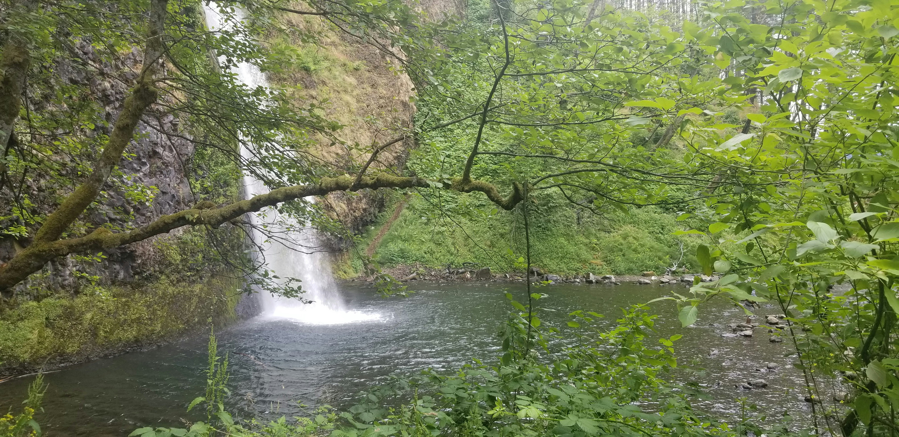

Multnomah Falls is a two-tiered cascade soaring 620 feet above the Columbia River Gorge, making it Oregon's tallest and most beloved waterfall. Draped in moss, mist, and legend, it's one of the Pacific Northwest's most photographed locations — and for good reason.
Every season unveils a different form of magic here, from icy winter veils to lush emerald spring canopies. The falls are part of the Columbia River Gorge National Scenic Area, a region carved by ancient floods and volcanic activity, now wrapped in misty forests and timeless rock faces.
Gallery Moments


Getting There
Multnomah Falls lies roughly 30 miles east of Portland along Interstate 84. Exit 31 leads directly into the parking area, which fills quickly on weekends and holidays. Early morning is ideal for parking, solitude, and photography.
Visitors can reach the viewing platform in minutes — a paved walkway leads from the base lodge up to the lower falls overlook. For a closer view, continue to the Benson Bridge, the iconic arch suspended between tiers of water.
The Hike to the Summit
The trail to the top of Multnomah Falls climbs approximately 1.2 miles, winding through switchbacks carved into basalt cliffs. Though steep in places, the path is well-maintained and rewards you with sweeping views of the Columbia River Gorge from above the falls.
"Standing at the overlook, you can feel the rhythm of the falls — ancient, steady, and alive."


Photography Tips
- Arrive early — morning light softens the scene and mists dance through the canyon.
- Bring a tripod for silky long exposures that capture the waterfall's dreamlike motion.
- Visit year-round — winter brings icy cascades; summer reveals lush greens; autumn offers warm tones.
- Experiment with focal length — wide shots capture grandeur, tighter frames isolate textures.
Nearby Waterfalls & Hidden Spots
Within minutes of Multnomah Falls are equally enchanting destinations:
- Wahkeena Falls: A delicate, tiered cascade reachable via a short hike from the same area.
- Latourell Falls: A dramatic plunge with vivid basalt columns — ideal for moody photography.
- Horsetail Falls: Visible from the highway, this smaller yet powerful waterfall glows in afternoon sun.
Each trail carries its own rhythm — together they form a gallery of Oregon's elemental beauty.
Best Time to Visit
Spring brings peak flow and lush green canopies. Summer offers clear skies. Autumn turns the gorge gold and rose, while winter wraps the cliffs in ice.
No matter the season, the atmosphere remains unmistakably ethereal — where light, water, and stone weave together like circuitry carved by time itself.
Travel Notes
Before you go, check weather conditions and bring sturdy shoes — the trail can be slippery in mist. The Multnomah Falls Lodge offers restrooms, snacks, and a warm fireplace to end your visit.